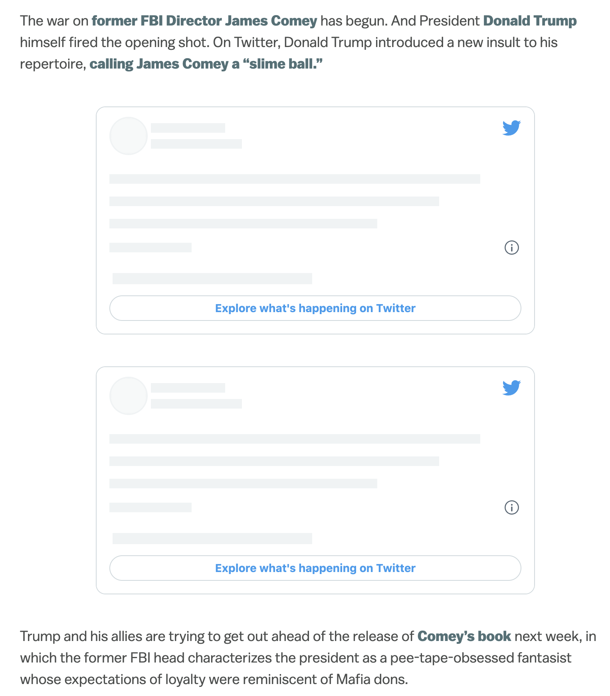

Twitter Edits You
With all the fuss about Twitter’s promised edit button, and how they might design it, we’re missing a disturbing development — Twitter is using its embedded javascript to edit other people's sites.
When a site embeds a tweet like this:
we are working on an edit button
— Twitter (@Twitter) April 1, 2022
the code looks like this:
<blockquote class="twitter-tweet"> <p lang="en" dir="ltr">we are working on an edit button</p> — Twitter (@Twitter) <a href="https://twitter.com/Twitter/status/1509951255388504066?ref_src=twsrc%5Etfw">April 1, 2022</a> </blockquote> <script async src="https://platform.twitter.com/widgets.js" charset="utf-8"></script>
That widgets.js script looks for blockquotes with the class="twitter-tweet" on,
and replaces them with a Twitter branded iframe to confirm that it is a real tweet (and encourage you to click through to Twitter).
Without the script it would look like this:
we are working on an edit button
— Twitter (@Twitter) April 1, 2022
Until recently, if the tweet or account had been deleted, then Twitter would leave the blockquote alone, so the embedded text would still show, but without Twitter’s validation.
This was by design, so that the act of quoting would still work. As Ben Ward, who wrote the orginal code said:
@BenWard what happens if you embed a tweet and the user deletes it? does it show up as blank "linkrot" on your site, then?
— Ariel Waldman (@arielwaldman) December 8, 2011
@arielwaldman The embed code is a <blockquote> containing the Tweet content. If it's deleted, or 1000 years in the future, the text remains.
— Ben (@benward) December 8, 2011
And the API documentation still says this:

However, Twitter has broken this API contract. Here’s a tweet that I deleted:
In Soviet Russia, Twitter edits you.
— Kevin Marks (@kevinmarks) April 6, 2022
Notice that it doesn’t show as a blockquote fallback, but as an empty white blob. Twitter is not confirming the tweet, but it is erasing my citation of it.
Twitter has used its javascript to edit my webpage text. When I pointed this out to Twitter Engineering:
Here's an old example post of mine. Notice how the 2 deleted tweets are blank, making nonsense of the narrative: https://t.co/6exFMCeS0Y
— Kevin Marks (@kevinmarks) March 29, 2022
It first looked like this, then showed deleted ones as HTML, now it's blobs. pic.twitter.com/eYw1hx5jYk
The response was that this was “to better respect when people have chosen to delete their Tweets”:
Hey Kevin! We're doing this to better respect when people have chosen to delete their Tweets. Very soon it'll have better messaging that explains why the content is no longer available :) my DMs are open if you'd like to chat more about this
— Eleanor Harding (@tweetanor) March 29, 2022
This is tampering with the public record. Any news article that cited a tweet from the former president, like this vox one, will now have an incoherent hole in it: 
Rather than the cited text:
I don’t think Twitter should edit other people’s webpages to remove tweets that have subsequently been deleted. Do you?